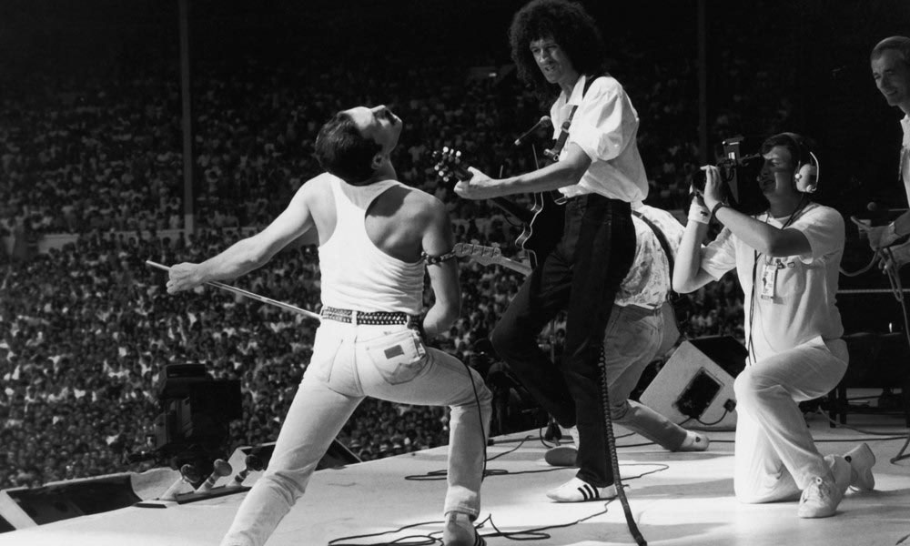

Inicio
Conoce todo sobre tu banda favorita.
Carrera
Biografía
Queen fue una banda de rock formada en Londres en 1970. La formación original incluía al cantante Freddie Mercury, al guitarrista Brian May, al bajista John Deacon y al baterista Roger Taylor. La banda se destacó por su sonido innovador, que combinaba elementos del rock, el pop, el glam y el heavy metal, y por la personalidad carismática y teatral de Mercury en el escenario. Queen alcanzó el éxito comercial y crítico en la década de 1970 y se convirtió en una de las bandas más influyentes e icónicas de la historia del rock. Entre sus mayores éxitos se encuentran "Bohemian Rhapsody", "We Will Rock You", "We Are the Champions" y "Somebody to Love". Después de la muerte de Freddie Mercury en 1991, la banda continuó tocando con diferentes vocalistas, pero nunca lograron recuperar la magia y el éxito que tuvieron en su era clásica. A pesar de esto, su música sigue siendo muy popular y su legado perdura en la cultura popular y en la historia del rock..
Conciertos
Queen tuvo muchos conciertos icónicos en su carrera, pero aquí te menciono algunos de los más importantes: Live Aid (1985): El concierto de Live Aid en el estadio de Wembley recordada como uno de los momentos más emocionantes del concierto. Rock in Rio (1985): Queen fue el acto principal del festival de Rock in Rio en Brasil, ante una multitud de más de 300.000 personas. Live at Wembley Stadium (1986): Queen grabó y lanzó un concierto en vivo desde el estadio de Wembley en Londres, que se considera uno de los mejores y más icónicos conciertos en la historia del rock. The Freddie Mercury Tribute Concert (1992): Después de la muerte de Freddie Mercury, sus compañeros de banda organizaron un concierto tributo en su honor. El concierto incluyó actuaciones de artistas como David Bowie, Elton John, George Michael y Metallica..
Vida Personal
Conoce a Freddie
Freddie Mercury nació en Zanzíbar en 1946. Fue un cantante y compositor británico conocido por ser el líder de la banda Queen.
Conoce a May
Brian May nació en Londres en 1947. Es un guitarrista, compositor y vocalista británico conocido por ser el guitarrista principal de la banda Queen.
Conoce a Roger
Roger Taylor nació en Norfolk en 1949. Es un baterista, compositor y vocalista británico conocido por ser el baterista de la banda Queen.

Conoce a John
John Deacon nació en Leicester en 1951. Es un bajista británico conocido por ser el bajista de la banda Queen.

Discografía
-
TOP 10 Canciones de Queen
- Bohemian Rhapsody
- We Will Rock You
- We Are the Champions
- Somebody to Love
- Don't Stop Me Now
- Another One Bites the Dust
- Under Pressure
- Radio Ga Ga
- Killer Queen
- The Show Must Go On
"Premios"
Queen, la legendaria banda de rock británica, ha ganado numerosos premios a lo largo de su carrera, algunos de los más importantes son: Premios Grammy: (4) 2018,1977,1981,1985 Brit Awards: (6) 1977,1990,1990,1992... Rock and Roll Hall of fame: fue incluido en el salon de la fama en 2001 MTV Video Music Awards(1) 1984 Ivor Novello: (3) 1977, 1992 2 veces